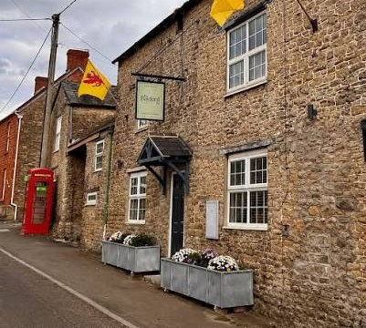

Twenty doors are cut into the bar room. One opens each night of the exhibition, from 7 November to the Anniversary & Awards Night on the 26th. Behind each is a true piece of Bayford's story.
nights until the Awards Night

Every door you open adds a question to the round. Come back each night and the quiz grows with the calendar.
Questions unlocked: 0 of 20
A new tradition starts this year. The theme is the Bayford Inn itself: the building, the community, its history, the people, a detail of the pub, or simply what a village pub means to you. This calendar is one of the entries.
Ages 15 and over
Under 15
Food or drink voucher, voted for by visitors
Free to enter. All ages and all abilities welcome.
Enjoying the calendar? Vote for it in the People's Choice Award when you visit the pub between 7 and 25 November.
Made for the Bayford Inn's first Annual Art Competition. Each door sits on something real in the bar room: the windows onto the old London road, the lamps, the chairs, the chalkboard and, last of all, the fireplace.